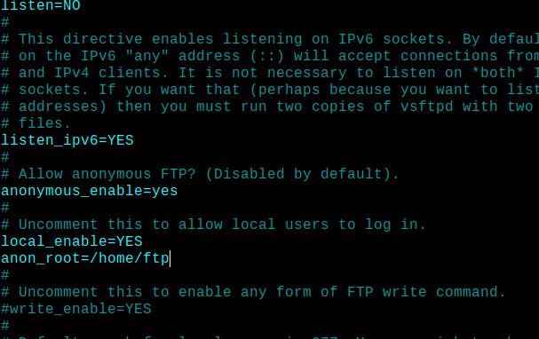
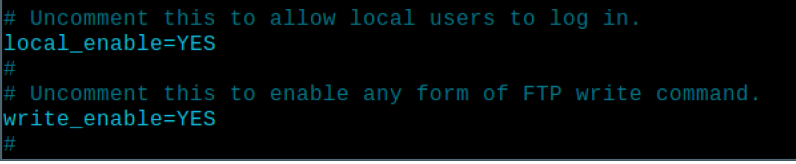

Para conseguir que nuestro servidor FTP funcione anónimo para descargas hay que cambiar el archivo vsftpd.conf y poner lo siguiente
Para que nuestro servidor FTP puedan usuarios de sisema descargar y subir archivos tenemos qe volver a cambiar el archivo anterior
Para que nuestro servidor funcione de modo pasivo solo tenemos que hacer lo siguiente

Para cambiar el mensaje de bienvenida solo tenemos que cambiar en el archivo vsftp.conf un mensaje y poer lo que queramos